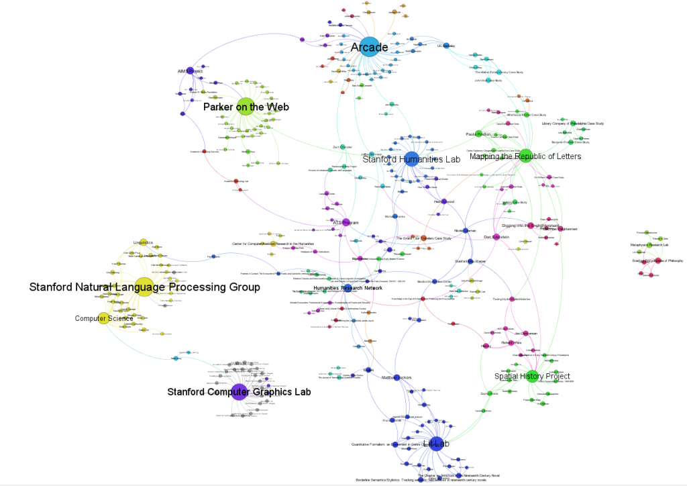

I won’t have a chance to give various formulations on it until next week, but the new map with the addition of the Stanford Computer Graphics Lab, the AIMS Project and the Stanford Natural Language Processing Lab can be seen here.


I've crudely represented known inactive projects by coloring them grey.
With the addition of the Stanford Computer Graphics Lab comes the inclusion of dated activity. Gephi has been working more toward the introduction of date-aware functionality and I’ll see if I can fill out more activity periods for the existing Stanford projects and participants seen here and try to produce a changing network over time.